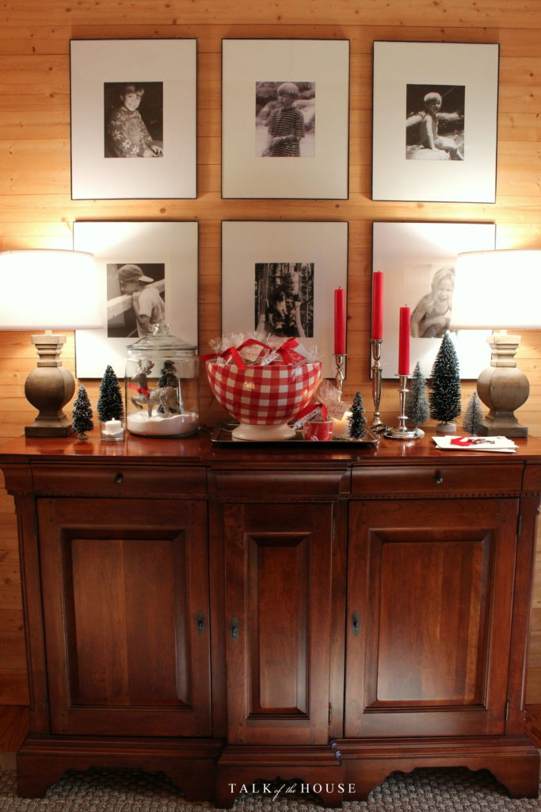
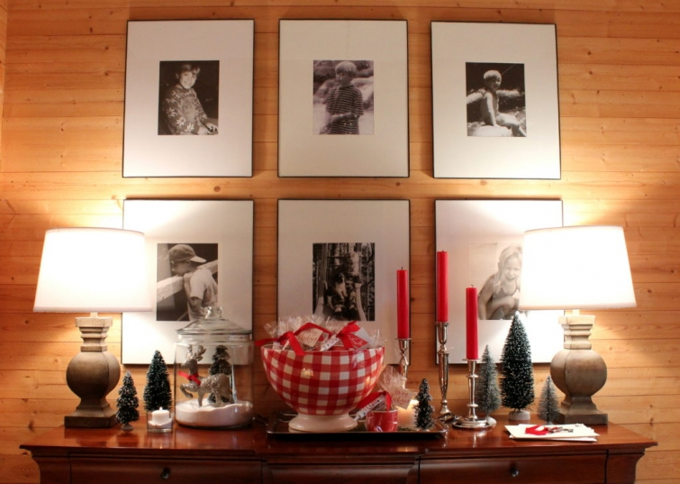

.png)
.PNG)
.PNG)
.PNG)
.PNG)
.PNG)
.JPG)
.JPG)
.PNG)
.PNG)


After a week or so of posts on the Avondale Estates Christmas tour, we now return to our house to finish up the Christmas season. If you remember, we were going through the house one room at a time looking at the holiday decorating in the bedroom wing, but I’m afraid Christmas is almost here, and we are running out of time. Yikes! So today we are going to take in several rooms.
Coming in the front door, you will see I have pulled out the large red checked bowl to use on the buffet with an assortment of bottle brush trees.
There is also an old glitter reindeer from Hobby Lobby in a jar of snow (laundry detergent.)
 Our small favors by the door were super easy to make.
Our small favors by the door were super easy to make.

I placed a little tissue paper in the bottom of these:

Then I took 6 cookies from the ginger families from here:

I dropped the cups with the cookies in a clear plastic treat sack, tied on a tube of white decorating gel (from Walmart), a gift tag, and a short piece of red ribbon. And viola! You have a gingerbread cookie decorating kit to-go! 🙂 And of course you could use other color icings for the gel…not just white. (That tube of icing already came with a hole in the top of it…perfect for running the ribbon through it.)
 Next to the foyer is the piano. A little bit of greenery in a mug and a couple of candy canes add just a touch of Christmas cheer to that spot.
Next to the foyer is the piano. A little bit of greenery in a mug and a couple of candy canes add just a touch of Christmas cheer to that spot.
 And then we come to the family room…
And then we come to the family room…
 with its very tall Christmas tree. 🙂
with its very tall Christmas tree. 🙂

 It holds quite an assortment of ornaments that we have decorated with for over 30 years…and tinsel…always love the nostalgic look of tinsel. 🙂 One day I want to go back to using those large C7 lights too, but I am always afraid we will burn the house down by catching the tree on fire with them. They get so darn hot!
It holds quite an assortment of ornaments that we have decorated with for over 30 years…and tinsel…always love the nostalgic look of tinsel. 🙂 One day I want to go back to using those large C7 lights too, but I am always afraid we will burn the house down by catching the tree on fire with them. They get so darn hot!
 I have never really been a fan of poinsettias, but this year I used one in the family room, and it is still going strong! (Gotta love that!)
I have never really been a fan of poinsettias, but this year I used one in the family room, and it is still going strong! (Gotta love that!)
 I took a few of the extra tree ornaments and filled a jar with them…
I took a few of the extra tree ornaments and filled a jar with them…
 and a few for the bowl in front of the sofa.
and a few for the bowl in front of the sofa.

 There are also ornaments wired to the garland over the mantel mirror.
There are also ornaments wired to the garland over the mantel mirror.


A couple of simple undecorated evergreens in pots add a bit more color. An old-fashioned glitter Santa, reindeer, and clock finish off the vignette.
An old-fashioned glitter Santa, reindeer, and clock finish off the vignette.

Now let’s take a break from all the red, and go in the playroom where I decided I wanted it to snow. 🙂 Those snowmen mugs from Target were perfect for the room this season with their green scarves.
 See…no red in here. 🙂
See…no red in here. 🙂
 My mother-in-law got me a couple of old sleds back in the fall. They were in really bad shape, so my husband sanded them, and I painted one of them green for this room.
My mother-in-law got me a couple of old sleds back in the fall. They were in really bad shape, so my husband sanded them, and I painted one of them green for this room.
 Lowes had some snowball ornaments I had planned to use on the tree, but when I got them home I decided they were waaaay too large for the scale of that little thing.
Lowes had some snowball ornaments I had planned to use on the tree, but when I got them home I decided they were waaaay too large for the scale of that little thing.
 So I went up in the attic and pulled out all the styrofoam snowballs I had made a couple of years ago for our daughter’s bedroom. An ornament hanger easily pushed into them, and they worked out just right for that tree. The pompom “garland” is Target’s Spritz “pompom gift ribbon” (on the aisle with all the colorful paper plates, napkins, and things.)
So I went up in the attic and pulled out all the styrofoam snowballs I had made a couple of years ago for our daughter’s bedroom. An ornament hanger easily pushed into them, and they worked out just right for that tree. The pompom “garland” is Target’s Spritz “pompom gift ribbon” (on the aisle with all the colorful paper plates, napkins, and things.)

And Target’s snowman cookie jar was just too cute to resist (filled with Archway wedding cake cookies that look like snowballs…those cookies are too yummy to resist.)

And White Christmas just had to go on the chalkboard in the “snow room.” 🙂

Now just wait here in the playroom, and I will have another post to finish up our tour in a day or so. You can watch a Christmas movie, pour yourself some hot cocoa from the thermos, and munch on a few cookies and popcorn. (The popcorn is in the bowl beside the sofa. 🙂 ) I’ve got a couple of errands to run to finish the last of my shopping (Hallelujah!) but I’ll be back with the kitchen, dining room, workroom, and porch for you to see soon.
Until next time…


.PNG)
Just Love your warm and cozy look. Where did you purchase all of your Buffalo Plaid red, black, and taupe drapes? Can’t wait to see what you do for Spring. Happy New Year
———————————————————————
Thank you Linda. I made almost all of the drapes. The ones in the playroom and in our daughter’s room came from Country Curtains. I lined them and added some trim to the panels. I made all the other drapes in the house. If you will click on the FAQ tab at the top of the blog, it will take you to the page that should have all of the fabric sources listed.
Kelly
Taking a moment before the craziness of Christmas Day starts to browse through some of my fave bloggers’ pages and just had to comment on yours. In an era where store perfection seems to be the goal, your house is a welcome oasis. All I kept thinking as I looked through your pics was “I would love to visit her!” No all white scaring people to make themselves comfy, books with spines facing out so you can read titles and choose one, sofas without too many pillows, and furniture arranged for living. All this done with finesse and taste. Love everything about your home. Thanks for sharing. Merry Christmas!
———————————————————————
Goodness! Thank you for such a kind comment Maggie. I know exactly what you are speaking of with the white sofas, books turned around on the shelves, and a million pillows filling every seating spot in the house. It is unreal the things that magazines and shows think we should live with. A house is for living…and that is what we do here…with a lot of red! LOL I am glad you enjoy seeing the photos of it.
Merry Christmas and Happy New Year wishes to you. 🙂
Kelly
This tour has been fabulous. I just wanted to say thank you for your lovely posts throughout the year, and also to wish you and your family a Merry Christmas!
———————————————————————-
Thank you for reading all the tour posts Frances (and the others through the year. 🙂 ) I hope your Christmas was a good one. Happy New Year to you!
Kelly
Merry Christmas, Kelly! I adore every last detail. Your vignettes are unique and beautiful. Especially love the one on the piano. Your snow room is delightful. Your family and guests must indeed feel wonderfully at home. Thank you for inspiring us and inviting us to share this blessed season.
——————————————————————–
Thank you Tricia. I am really going to be sad to put it all away. Our house really does look its best during the Christmas season.
Kelly
OOOOOHHHHHHH Kelly, I haven’t posted in SO LONG!!!!! I am always here with you though. We are currently in the middle of selling our house (I sent you a pic a couple years ago with tire swing in the yard)and we have purchased a house on 3 acres. Same city….just further outside of the city in the country. So thankful your still blogging, I should would miss your posts! Your still my favorite.
The house we are purchasing we are fixing up as we did our current house and I often think….WWKD? I bought an antique bed for $100 that I KNOW you would be proud of me for buying!! 🙂
Merry Christmas sweet friend. I’ll send you pics of this place too, before and afters are so much fun!
Hugs to you. Jennifer
——————————————————————–
Well there you are! Been missing you girl. How exciting to be fixing up another home! Your antique bed sounds like a steal. 🙂
Hope your Christmas was a good one and that 2017 is a productive and fun year for you and your family.
Happy New Year!
Kelly
Kelly…FABULOUS Christmas tree and I loved the little tree as well…
Blessings, Peace and Joy to you and your family this Christmas season…Judy
All looks so Lovely! Would you mind sharing the name/brand of the green color in your playroom? Thank you and Merry Christmas🎅
——————————————————————–
Thank you Kristine. My latest match to it is an Olympic paint sold at Lowes called Moss Point Green.
Happy New Year!
Kelly
Your house inspires me, waiting to see the rest of it
I love your playroom and the green you use in it. The shade is really pretty. Your decorating is beautiful.
Merry Christmas!
Kelly,
Everything is beautiful. The favor is a super-cute idea.
You must not require much sleep to be able to get all this done.
Love the green sled.
I look forward to the seeing the rest of the house.
Merry Christmas
DiAnne
—————————————————————
So glad you liked all the holiday house details. I DO require a good bit of sleep. I just stay up late, and then get up at 8:00 (with a 15 minute power nap in the afternoon! LOL)
Hope your Christmas was merry, and that 2017 is your best year yet!
Kelly
Your children must love coming home to their beautifully decorated home. So many pretty and charming spaces. Merry Christmas to you and your family!!
We have used the c7 lights for 38 years on a live tree. My husband rigged up a Reastat like you use on the wall to Dim a light or slow a fan. We can dim or brighten the lights on our tree. Enjoy your blog immensely, and put me on the list to come help me decorate my house next year…..we would have fun! Happy Holidays!
——————————————————————–
Wow! That is good to know. Your lights sound just wonderful Lori! We most certainly would have fun decorating together, (and I could check out your C7 lights then. 🙂 )
Happy New Year to you!
Kelly
Kelly, you are such a creative person !!! I love what you have done in your house this Christmas ! Your home always seems so inviting. Thank you for sharing.
So glad to be back in your lovely home to continue your tour!! I just love everything you have done!! It amazes me how you come up with different ideas every year!! Merry Christmas to you! And I am looking forward to seeing the rest of your home– thank you for sharing!! 🌲💕🌲
All just beautiful Kelly. Happy Christmas.
You have a lovely home! Since seeing your house, I now have the red check board curtains. So pretty. Thank you for inspiring me.
Absolutely gorgeous!! I love your home and you are so creative with your holiday decorating!! By the way you inspired me to clean out my linen closet and totally organize all my linens – I’m obsessed with how completely organized your home is. Unfortunately, as long as my two slobs of adult daughters are still living in my lower level it will NEVER be organized the way I want it to be – sniff sniff!!
As always I love every detail. Thank you so much for sharing your lovely home with us. Wishing you and your family a very Merry Christmas and blessed New Year.
Kelly, your home is stunning and cozy comfy at the same time. Thanks for sharing and Merry Christmas to you and your family.
Your blog is like a little gift. Your home is my favorite in “blogland.” Just warms my heart. I have a question about your perfect chalkboards. What chalk product do you recommend? Always makes me want to try one. Merry Christmas, Kelly!
—————————————————————-
Aw how sweet of you to say that Vel. 🙂
I have lately been using only chalk pens – no old school chalk. The pens show up so much better to me. I use the ones called “Bistro Chalk Markers” and they are usually found at Michaels and Hobby Lobby (and sometimes Walmart in the craft section.)
Merry Christmas and Happy New Year to you!
Kelly
So pretty! Brilliant idea to paint the sleighs green!! I always love how you decorate the playroom, but this may be my very favorite!! 🙂 I’m happy I had a moment to pop in and see the tour! Have a wonderful Christmas Kelly!!
Kelly,
I am so glad to see the playroom! I love all of the inviting green in there! It makes me want to curl up and watch a movie. Your foyer and family room room look lovely as usual. Thanks for sharing. I can’t wait to see what is next. Take Care.
Dawn
The green and white in the bedroom are really festive! It’s a great change from the traditional red and white. I too, have an old fashioned wooden sled that I keep for my front porch decorations. It was the sled I used to pull my daughter on when we traisped to the post office when she was a toddler. It holds such lovely memories, and I love to see it on the porch in Florida, as though it was waiting for our trip through the snow! But isn’t that what Christmas memories do, bring us back to bygone times? Kelly, I hope you and your family have a warm, wonderful Christmas. I look forward to a new year of your terrific pictures and helpful decorating ideas!
Kelly, it’s just beautiful. Your attention to detail is amazing. Just the right amount of decorating for each room – perfect! I love your calligraphy too! Have a wonderful Christmas and New Year!
I really like the green/black/neutral theme in the playroom. The snowball tree :)…Your home always appears welcoming. Laundry detergent — great idea! I think baking soda would be a good one to use too. Can’t wait to see your porch…always my favorite. Thank you for sharing.
I am always in love with the small touches you do to your decor. They really somehow stand out and make it all shine. I must have missed the snowmen pieces at Target, because I usually zero right in on a snowman anything! That cookie jar would complete me! (HA!)
Your playroom is so cool because it’s unexpected, yet welcoming because of the soothing comfort it gives the room. I love the reds of Christmas, but sometimes it is all too much when you see it everywhere! I usually do reds with silver, but the past few years I have moved to silver and white. Guess I need more calm these days!
I am sitting back with a cup of coffee and an overly decorated sugar cookie from yesterdays baking with the grandkids, waiting to see the rest of your lovely home! (The grands just slapped a ton of frosting on the cookies and followed that with a generous dousing of sugar or sprinkles. There was no “decorating” done here!) 🙂
Breathtaking.Love that green color!
Everything is so festive Kelly! You’ve got such a flair! I’m still a red fan…so your family room is my favorite…shhh..don’t tell the others! Merry Christmas! 😉
PS Epson Salts works well for the jars as snow also.
Kelly, you have missed out with the Poinsettas. I buy mine the first of December and end up giving them away or throwing them away late January. They add “life”, come in shades of red (we like that) and say, Merry Christmas!
I will be over! Lovely.
I like the use of the Christmas balls in the bowl and jar.
I know so simple but you do everything with class.
Also use of the Ginger Family. Much cheaper than buying gingerbread houses for kids to icing. That’s what they like, playing in the icing. Thanks for this one. I always enjoy your use of your silver (tray, candle sticks, etc.) and your many pieces of wicker. Please “will” me your wicker. HA! HA!
Looking forward to your next post!
Kelly,
I love your style. Where did you get the light brown (they look like they are wooden) lamps in your foyer?
Thank you.
Merry Christmas!
Shirley
———————————————————————
Shirley those lamps came from Target. I think they may still carry them…not sure though.
Thank you for reading the posts. 🙂
Kelly
So, so pretty and fun! Red is my favorite color but I adore the green and white in the playroom. Wish I’d spotted those snowmen at Target. Pretty sure they are all snapped up by now.
What kind of chalk pen do you use on your chalkboards? They are always so lovely!
——————————————————————–
Deb I use the Bistro Chalk Markers that are available at Hobby Lobby and Michaels. Glad you like the boards!
Kelly
Right now you are inspiring me to get rid of the “hit by a tornado” look that I have going on. Every year I say I am going to be finished early but I never am! I love your bottle brush trees. I was wondering while looking at an earlier post if your snow was laundry detergent! Great idea! Your tree pillow is pretty. And your play room decor is so clever. How about using the pom pom ribbon as garland! Merry, merry Christmas, Kelly!
———————————————————————
I so know that feeling Kathy! I was still decorating right up until Christmas Eve (and I even started the 2nd week of November!) Merry Christmas and Happy New Year to you. Hope your holidays have been good ones, and that 2017 will be a healthy one for all your family. 🙂
Kelly
I am just in love with your home. I am sure you know by now! Your Christmas decorations are so soothing to the eye and your home so cozy. Have a Merry Christmas!
SO cute! I just love the playroom with the green and white. Merry Christmas and thank you for working so hard and sharing your beautiful blog with everyone. I always find inspiration here.
Kelly,
All looks pretty and festive but by far, the playroom is my favorite. The “snow” with the black and a few spots of green accents are perfection. You hit a grand slam with that room!
I always enjoy your home and I’ll have a seat in the playroom and sip on cocoa until you’re back from your errands and ready to “wrap up” the show (pun intended). 🙂
xo,
Karen
————————————————————-
I am so glad you liked the playroom with all its snow and green. 🙂 Hope you and your family had a wonderful Christmas. Here’s to a healthy and happy 2017!
Kelly
I love everything about your decorations, you know how to do it just right. Come decorate my house…better yet…I’ll come to your house. Lovely…just lovely.
Merry Christmas and Happy 2017!
There is just something about your home and the warm and welcoming style of decorating that warms my heart and makes me smile. Thank you for sharing your home, especially at Christmas. Merry Christmas to you and your family 🎄
I just love your style and the family room with snowmen and snow balls. You do such a beautiful job Kelly.
Merry Christmas!
I am afraid if I show my husband this post, he will want to live at your house! He LOVES tinsel but I won’t let him have it because of our dog. When we first started dating, he had those huge old fashioned lights on his Christmas tree too! I think we still have them somewhere in the basement…Your house looks so cozy and festive and I love those gingerbread favors. Such a cute idea. You are so inspiring throughout the year and I always look forward to reading your posts. Have a Merry Christmas!
Shelley
I enjoyed looking at your pictures this morning! I wish you were my neighbor. I’d drag you to my house to help me! Have a Merry Christmas, sweet friend!
——————————————————————–
That would be a lot of fun! 🙂 Merry Christmas to you too Melissa!
Kelly
Wonderful as always Kelly! Seeing your home brightens my Christmas spirit!
——————————————————————-
Thank you Kim! Seeing your comments here always brightens my spirit. 🙂
Merry Christmas!
Kelly